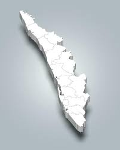

Kerala

- Diverse Landscape: Features the Western Ghats (mountains), rainforests, waterfalls, beaches, and the iconic backwaters (network of canals and lakes).
- Backwaters: A tranquil network of waterways, often called the "Venice of the East," with houseboats and local life centered on boats.
- Key Locations: Includes hill stations like Munnar and coastal areas with white sand beaches.
- Rich Heritage: A blend of Indian and Dravidian influences with vibrant performing arts like Kathakali and Mohiniyattam, and martial arts like Kalaripayattu.
- High Social Indicators: Known for high literacy rates, life expectancy, and low infant mortality.
- Language: Malayalam is the official language.